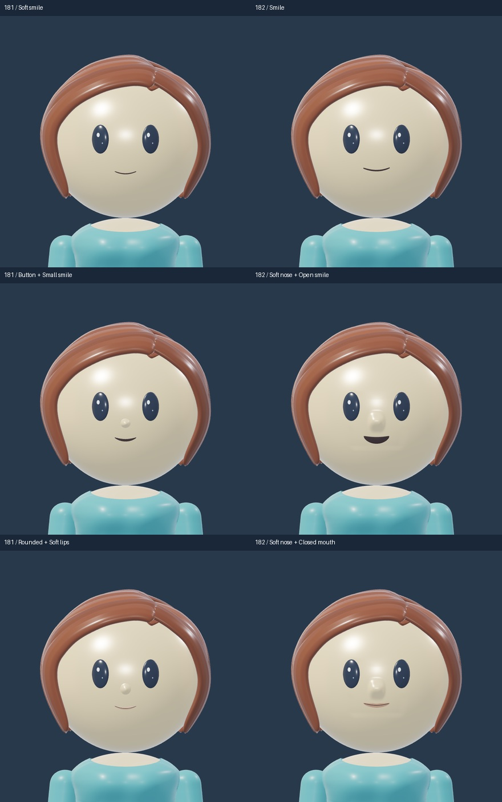
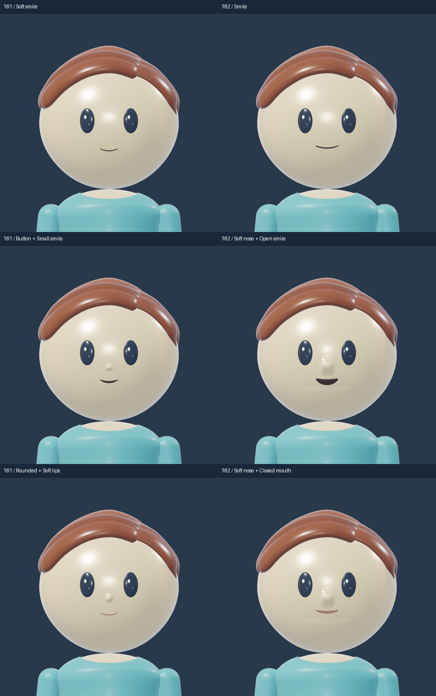
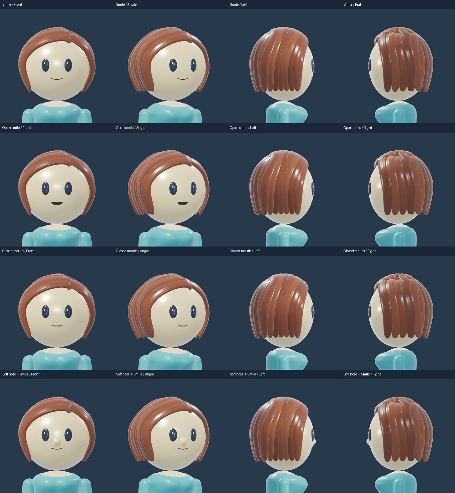
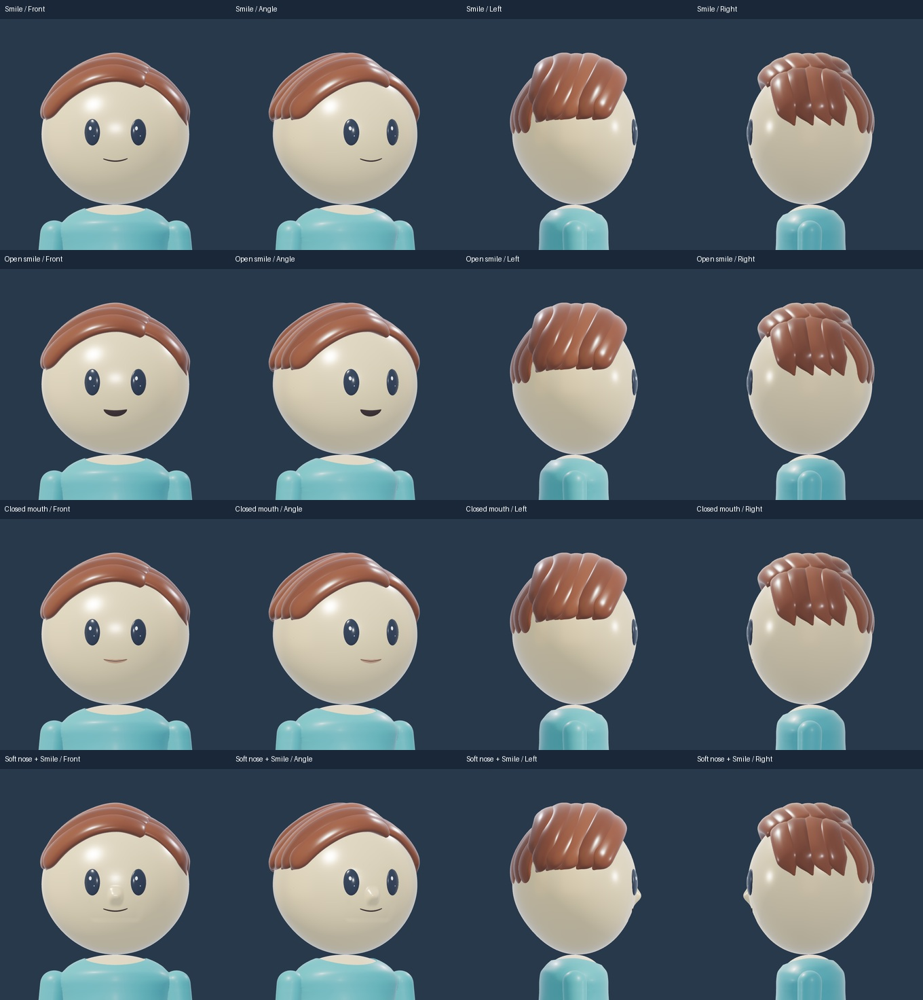
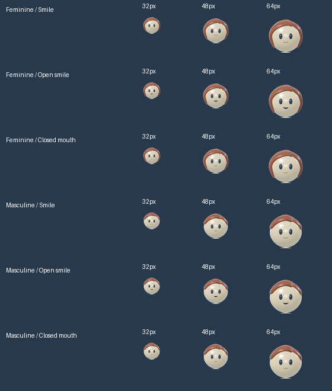
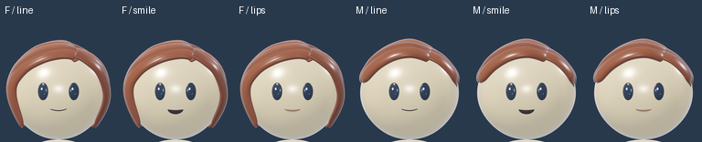
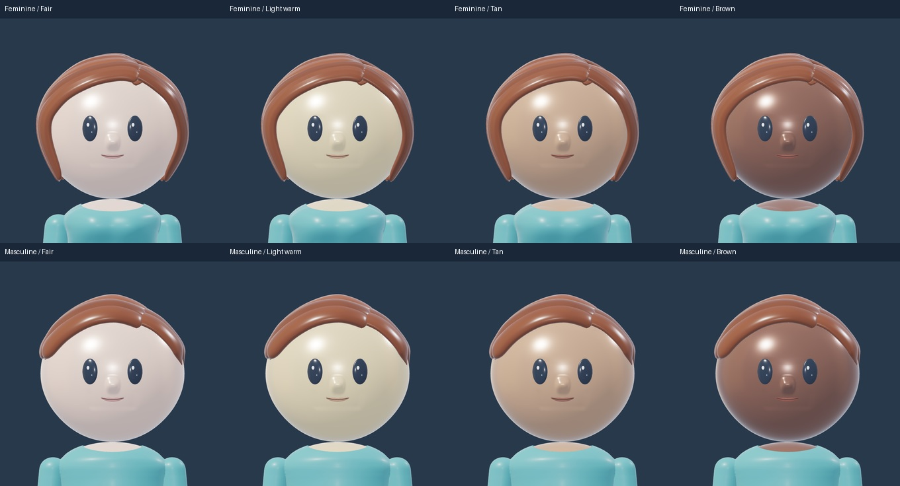

FACE STUDY · 182
A clearer face language
A face-only revision: one integrated nose and three distinct mouths. My recommendation is None + Smile for the default face. Every option works on either build; these remain candidates for your review.
 Blender render · T-shirt / Skirt / Light warm
Blender render · T-shirt / Skirt / Light warmLoad 3D to mix outfits, rotate and zoom. Each build remembers its selections.
Rotate, zoom and compare with one consistent 3D lighting setup. Head shape, eyes, hair, skin tones, arms and T-shirt are unchanged. Remaining wardrobe fitting is separate.
What stays and what changes
| 181 option | Decision | Reason |
|---|
| No nose | Keep | The simplest silhouette and clearest eye focus. |
| Button nose | Replace | Reads as a shiny bead. New Soft nose is one continuous head surface. |
| Rounded nose | Remove from this study | Too similar to Button to justify another choice. |
| Soft smile | Refine → Smile | Keep the quiet expression; wider gesture and stronger small-size stroke. |
| Small smile | Rebuild → Open smile | A rounded opening with softer corners and clearer expression. |
| Soft lips | Replace → Closed mouth | A single restrained lip shape, with readable colour and no raised lip tubes. |
Before and candidate
Same skin, eyes, hair, camera and fixed 3D lighting. Tap a sheet to enlarge.


Front, angle and both profiles


Small portraits and skin tones
32, 48 and 64 pixels, followed by 128 pixels. Open each sheet for its original pixel size.



Scope and sources
This is native 3D geometry, saved and reopened before export. Gallery images use the same fixed 3D viewer lighting. Optional faces await owner approval. The broader wardrobe is still in progress.
Reference principle: a small, consistent face library can carry a brand. Headspace illustration guidelines were reviewed for that principle; these shapes are independently modeled for Ravedio.